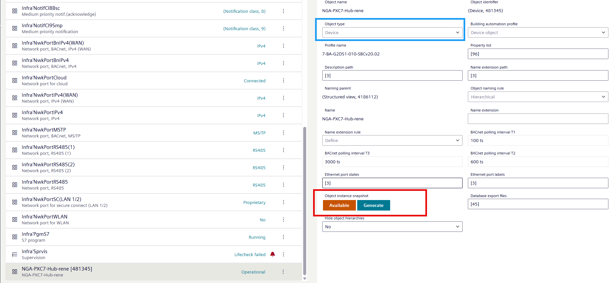

Object instance snapshot property used by Desigo CC
The Object instance snapshot property is only visible to users with extensive user rights. Basically, this is a background function used by Desigo CC for online import. These buttons therefore have no meaning for the most user and are only documented for completeness.

The process from the Desigo CC perspective is:
- Desigo CC makes an online import request to the Generate property.
- The device creates a complete object list including the downloaded delta data (downloaded by using the play button in the programming editor).
- After creating the files, the device sends an Available back to Desigo CC.
- The Desigo CC online data import starts.